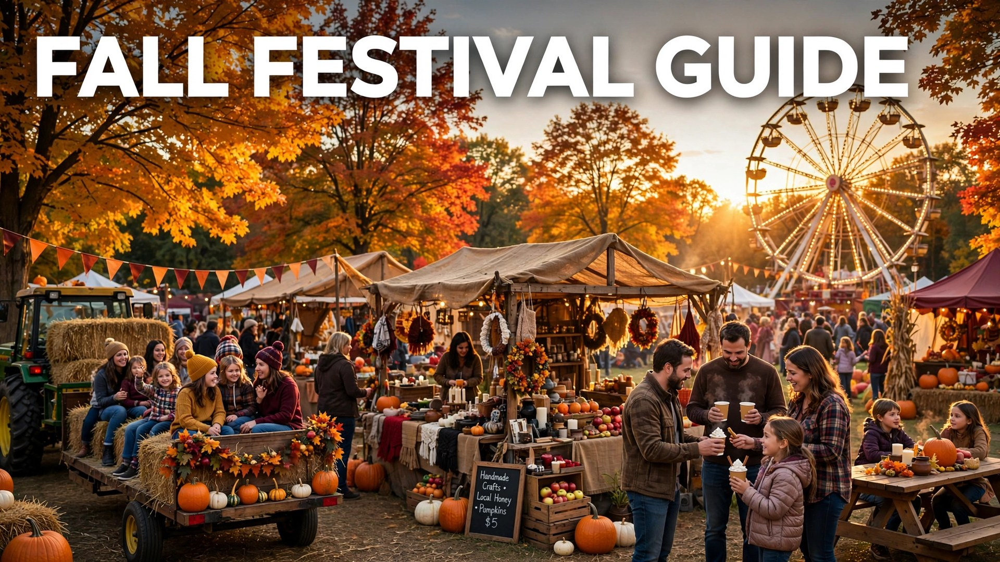

Autumn is festival season. From late September through November, towns and cities everywhere celebrate the harvest with fall festivals — weekends of live music, craft stalls, farm food, hayrides, and activities that distill the entire season into a single perfect day out. Whether you are hunting for the best apple cider donut of your life or just want the kids tired out by 3 p.m., there is a fall festival with your name on it.
This 2026 guide covers the types of fall festivals worth your weekends, how to find the best ones near you, what to expect when you arrive, and the tips that turn a good festival day into a great one. Peak season is October — which means right now.
Types of Fall Festivals
- Harvest festivals: the classic — farm-based, with pumpkin patches, corn mazes, hayrides, and produce markets. The heart of fall festival season.
- Apple and cider festivals: orchard events built around apple picking, fresh cider pressing, cider donuts, and pie contests.
- Oktoberfest celebrations: beer, bratwurst, oompah bands, and stein-hoisting — the adult-skewing end of the festival spectrum.
- Arts and crafts fairs: juried artisan markets with autumn themes; the best place for unique seasonal decor and gifts.
- Scarecrow and pumpkin festivals: small-town celebrations with contests, parades, and gloriously competitive pumpkin weigh-offs.
- Food truck and music festivals: the modern format — great eats, live bands, and a relaxed lawn-picnic vibe.
- Dia de los Muertos and cultural festivals: early-November celebrations with deep roots and stunning visuals.
How to Find the Best Festivals Near You
Start with your city or county events calendar and tourism site — they list the established festivals with dates, parking, and ticket info. Local parent groups and neighborhood forums surface the smaller gems: the church harvest fair, the school fall carnival, the farm that only advertises on a roadside sign. Check Instagram and TikTok for recent years' posts from each festival; real attendee photos tell you more than any brochure. For the famous regional festivals (the ones worth a day trip), book tickets online in advance — peak October weekends sell out. And ask around: the best festival recommendation always comes from a friend who went last year.
What to Expect: The Festival Day
Most fall festivals run 10 a.m. to 5 or 6 p.m., rain or shine. Expect an entry fee ($5–$20 for adults, often free for young kids), then pay-as-you-go inside for food, activities, and the farm store. The rhythm of a great festival day: arrive at opening for short lines and the best produce, do the headline activities (maze, hayride, picking) before lunch, eat at the peak of hunger around noon, browse stalls in the afternoon, and grab take-home treats before leaving. Live music usually runs all day on a central stage — plan your picnic blanket time around a set you want to catch.
Festival Tips: Food, Crowds & Kids
- Eat strategically: festival food is the point — budget for it. Cider donuts sell out by afternoon; buy early.
- Beat the crowds: opening hour and the last two hours are quietest. Midday Saturday is peak chaos.
- Bring cash: many vendors are cash-only or charge card fees. An ATM on site means a line.
- Dress for the field: boots, layers, and sunscreen. Festivals are outdoors on working farms.
- Kids' survival kit: snacks, water, wipes, a change of clothes, and a wagon if you have one — tired toddlers and pumpkins both ride well.
- Parking plan: popular festivals mean field parking and long walks; arrive early for close spots and note your row.
- Take-home strategy: bring a cooler for cider and produce, and tote bags for pumpkins and crafts.
Making It a Tradition
The families who love fall festivals most are the ones who go every year. Pick one anchor festival — the one with the best overall experience — and commit to the same weekend annually. Add rituals: the first cider donut of the season, the annual family photo at the entrance sign, the contest for the weirdest pumpkin. Let kids pick one take-home treasure each year; the collection becomes a timeline. Over time the festival becomes a seasonal milestone the whole family anticipates — the surest sign autumn has truly arrived. And since Halloween 2026 falls on Saturday, October 31, a late-October festival weekend pairs perfectly with your Halloween plans.
Beyond October: Late-Fall Events
Festival season does not end at Halloween. Early November brings harvest homecomings, Dia de los Muertos celebrations, and veterans' parades with fall themes. Late November shifts to holiday markets — many fall festivals literally transform into Christmas markets on the same grounds. If October weekends are booked solid, the first two weekends of November often offer the same farm fun with half the crowds. Check dates carefully: some festivals run one weekend only, while others stretch across the whole season. The savvy move is one big October festival plus one relaxed November outing — the full arc of autumn, twice enjoyed.
Festival Food: What to Eat
Come hungry — festival food is half the experience. The non-negotiables: fresh apple cider (hot or cold), cider donuts made that morning, kettle corn popped on site, and caramel apples. Beyond the classics, look for regional specialties: pumpkin whoopie pies in New England, roasted corn in the Midwest, funnel cake everywhere. Savory options have leveled up — expect gourmet grilled cheese, loaded fries, and legit barbecue alongside the turkey legs. Pace yourself: share everything, eat the hot fresh items first (donuts wait for no one), and save room for the take-home bag of fudge or preserves. The best festival souvenir is edible.